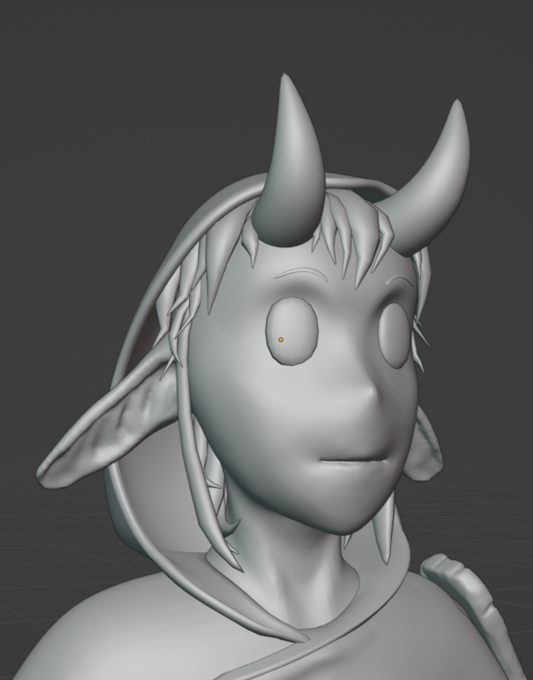
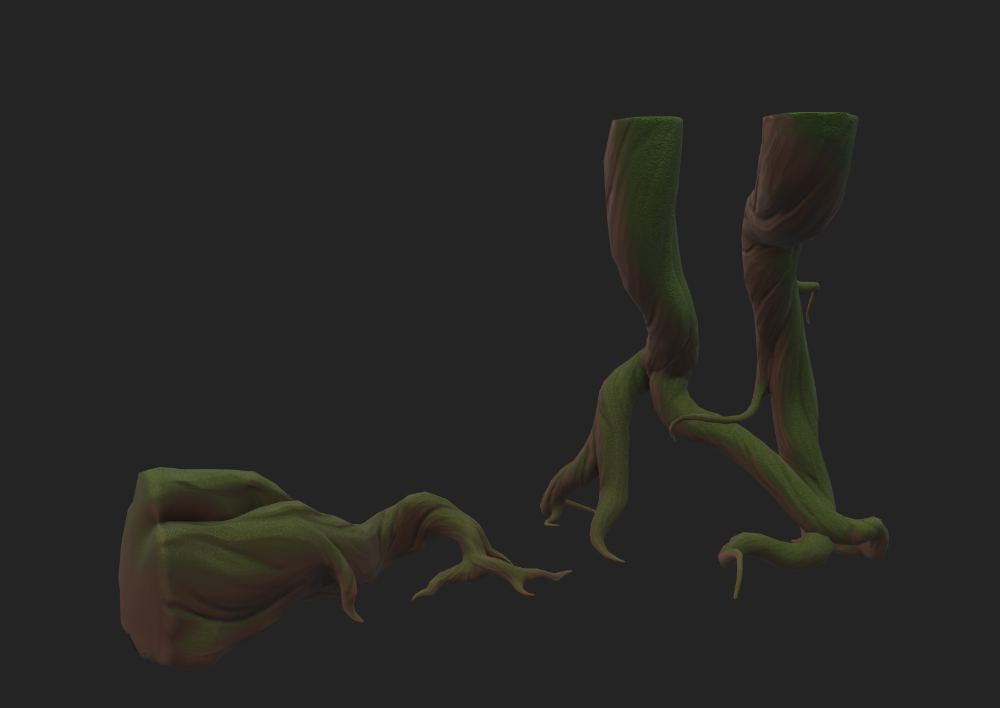
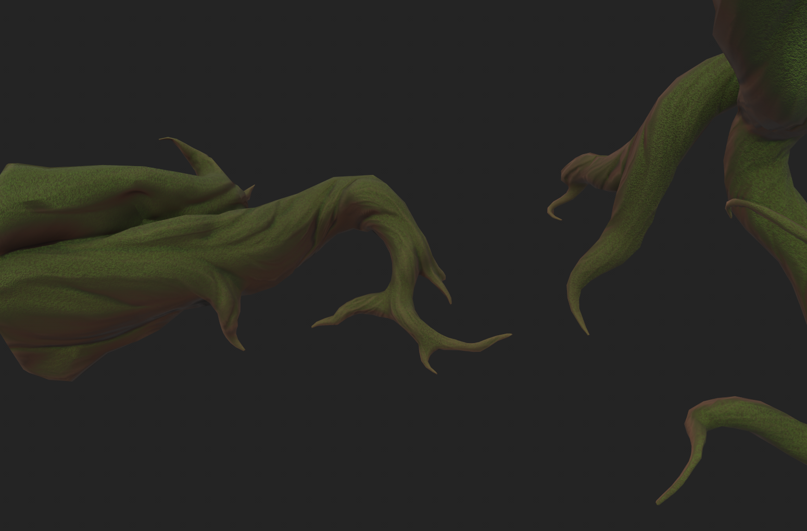

Heart of Sylvan Game Projekt
Beschreibung
Heart of Sylvan ist ein Spielentwicklungsprojekt gewesen, bei dem ich mitgearbeitet habe. Wir waren ein Team von 10 Leuten, bei dem ich vor allem im 3D Bereich beigetragen habe. Ich habe nicht nur selbst modelliert, sondern war auch die Person die sehr oft anderen Arbeitsschritte erklärt hat und die genauere Planung der Umsetzung beigetragen hat. Das hat mir geholfen tiefer in die Materie einzusteigen.
Fürs Sculpten und Modellieren habe ich Blender verwendet. Die Texturierung wurde mir Substance Painter gemacht.
Auf dieser seite sind einige der Modelle, die ich für dieses Projekt beigetragen habe.
Protagonist: "Nika"
Turnaround
Wireframe
Details
High Poly Sculpt


Ingame Beispiel
Türen und Tore
Um Zeit und Ressourcen zu sparen, und weil es Bedart für verschiedene Tor Formate gab, habe ich einen Torbogen mit verschiedenen Segmenten modelliert, sodass man ihn tiefer in den Boden schieben kann, wenn grade ein Tieferes Tor gebraucht wird. In dem Spiel wurden aber auch zwei verschiedene Türen gebraucht. Diese Haben zwei verschiedene Höhen und wurden mit dem gleichen Torbogen kombiniert.
Bei den Türen und Toren, hat eine andere Person die Texturierung übernommen.
Tor und Tür 1
Tor und Tür 2
Ingame Beispiele
Pilzmonster "Mimik"
Die Mimik ist ein zunächst unscheinbar wirkender Pilz, der sich transformiert, wenn man ihm zu nahe kommt.
Für diesen Effekt, wurde mit Blend shapes gearbeitet. Außerdem hat der Pilz zwei verschiedene Texture Sets für seine Zustände. Außerdem habe ich ihm ein Einfaches Rigging gegeben und animiert.
Böden und Wände
verschiedene Bodentexturen für Landscape Materials in UE5
Ich habe das Fliesenmuster in Blender modelliert und dann mit einem Überschuss in Substance Painter gebaked. Die resultierende Normal Map konnte danach als seamless tiling texture verwendet werden. Damit man am Ende verschiedene Stufen von Verschmutzung und verfall haben konnte, habe ich mehrere Texturen für diesen Boden angefehrtigt. In unreal konnte man dann weiche Übergänge zwischen diesen Versionen schaffen, indem man diese als Landscape Materials verwendet hat.
Ingame Beispiele
Wurzeln
Die verschiedenen Wurzeln sollten an der Umgebung entlang wachsen und sich teilweise kompliziert um andere Gegenstände herumwickeln. Um diesen Effekt zu bekommen, habe ich mit einer aus der Unreal Engine exportierten Blockout Umgebung orientiert und in Blender um die verschiedenen Flächen herumgesculptet. Am Ende saßen die Wurzeln genau wie sie sollten.
Wurzeln Raum 1


Wurzeln Raum 2
Ingame Beispiele
Embleme
Die Embleme waren sehr wichtig, für ein Rätsel, dass im Spiel vorkam. Es gab insgesamt sechs Stück. Hier ist eines davon.
Ingame Beispiele